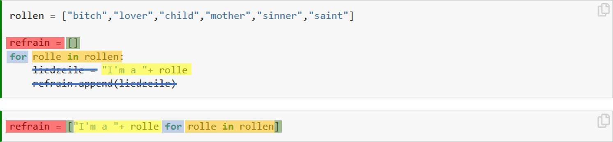

Aufgabe 11: For Loops Advanced¶
Theorie¶
In diesem Kapitel kommen noch zwei Aspekte von For Loops, die als „Advanced“ eingestuft werden können aber in der Praxis sehr nützlich sind. Dabei geht es um einerseits um verschachtelte For Loops und zum andere um eine verkürzte Schreibweise von For Loops.
Verschachtelte For Loops¶
Wir können verschiedene For Loops auch ineinander verschachteln (englisch: nested loops). Das ist vor allem dann nützlich, wenn alle Kombinationen aus zwei Datensätzen miteinander verrechnet werden müssen. Angenommen du willst die drei Mitglieder deiner Band (bestehend aus Il Buono, Il Brutto, Il Cattivo) deinen Eltern vorstellen und auch umgekehrt deine Eltern deiner Band vorstellen. Für so was eignen sich zwei verschachtelte vor Loops hervorragend:
eltern = ["Papa", "Mama"]
band = ["Il Buono", "Il Brutto", "Il Cattivo"]
for bandmitglied in band:
for elternteil in eltern:
print(elternteil, "das ist",bandmitglied)
print(bandmitglied, "das ist",elternteil)
print("---")
Papa das ist Il Buono
Il Buono das ist Papa
---
Mama das ist Il Buono
Il Buono das ist Mama
---
Papa das ist Il Brutto
Il Brutto das ist Papa
---
Mama das ist Il Brutto
Il Brutto das ist Mama
---
Papa das ist Il Cattivo
Il Cattivo das ist Papa
---
Mama das ist Il Cattivo
Il Cattivo das ist Mama
---
Verkürzte Schreibweise¶
Es ist äusserst häufig der Fall, dass wir den Output aus einem Loop in einer Liste abspeichern wollen. Wie das geht haben wir ja bereits in Aufgabe 10: For Loop Basics gelernt:
rollen = ["bitch","lover","child","mother","sinner","saint"]
refrain = []
for rolle in rollen:
liedzeile = "I'm a "+ rolle
refrain.append(liedzeile)
Nur ist das ein bisschen umständlich, weil wir dafür viele Zeilen Code brauchen um etwas eigentlich ganz simples zu bewerkstelligen. Es gibt deshalb dafür auch eine verkürzte Schreibweise, welche ich in der letzten Woche bereits einmal verwendet habe (siehe Übung 7.6). Der obige Loop hat in der verkürzten Schreibweise die folgende Form:
refrain = ["I'm a "+ rolle for rolle in rollen]
Diese verkürzte Schreibweise heisst in Python list comprehension und sie ist äusserst praktisch, wenn man sie beherrscht. Das Beherrschen ist aber nicht zentral, es reicht schon wenn ihr eine solche Schreibweise wieder erkennt und richtig interpretieren könnt (im Sinne von „Aha, hier wird also in einem Loop eine Liste erstellt“). In der folgenden Darstellung seht ihr farblich, welche Elemente sich in der verkürzten Schreibweise wo wiederfinden und welche Elemente gar nicht wiederverwendet werden.

Übungen¶
Übung 11.1¶
Erstelle zwei Listen bestehend aus 3 Hundenamen (hunde) und 3 Katzenamen (katzen). Erstelle einen verschachtelter For Loop, wo jeder Hund jede Katze anbellt und jede Katze jeden Hund anfaucht.
Bruno bellt Greta an
Greta faucht Bruno an
Berta bellt Greta an
....
Übung 11.2¶
Erstelle einen verschachtelten Loop, wo alle Kombinationen von 0 bis 9 miteinander addiert werden.